Interface PublisherBuilder<T>
- Type Parameters:
T- The type of the elements that the publisher emits.
- All Superinterfaces:
ConnectingOperators<T>,ConsumingOperators<T>,ErrorHandlingOperators<T>,FilteringOperators<T>,PeekingOperators<T>,TransformingOperators<T>
Publisher.
The documentation for each operator uses marble diagrams to visualize how the operator functions. Each element flowing in and out of the stream is represented as a coloured marble that has a value, with the operator applying some transformation or some side effect, termination and error signals potentially being passed, and for operators that subscribe to the stream, an output value being redeemed at the end.
Below is an example diagram labelling all the parts of the stream.

- See Also:
-
Method Summary
Modifier and TypeMethodDescriptionorg.reactivestreams.Publisher<T>buildRs()Build this stream, using the firstReactiveStreamsEnginefound by theServiceLoader.org.reactivestreams.Publisher<T>buildRs(ReactiveStreamsEngine engine) Build this stream, using the suppliedReactiveStreamsEngine.cancel()Cancels the stream as soon as it is run.<R> CompletionRunner<R>collect(Supplier<R> supplier, BiConsumer<R, ? super T> accumulator) Collect the elements emitted by this stream using aCollectorbuilt from the givensupplierandaccumulator.<R,A> CompletionRunner<R> Collect the elements emitted by this stream using the givenCollector.distinct()Creates a stream consisting of the distinct elements (according toObject.equals(Object)) of this stream.Drop the longest prefix of elements from this stream that satisfy the givenpredicate.Filter elements emitted by this publisher using the givenPredicate.Find the first element emitted by thePublisher, and return it in aCompletionStage.<S> PublisherBuilder<S>flatMap(Function<? super T, ? extends PublisherBuilder<? extends S>> mapper) Map the elements to publishers, and flatten so that the elements emitted by publishers produced by themapperfunction are emitted from this stream.<S> PublisherBuilder<S>flatMapCompletionStage(Function<? super T, ? extends CompletionStage<? extends S>> mapper) Map the elements toCompletionStage, and flatten so that the elements the values redeemed by eachCompletionStageare emitted from this stream.<S> PublisherBuilder<S>flatMapIterable(Function<? super T, ? extends Iterable<? extends S>> mapper) Map the elements toIterable's, and flatten so that the elements contained in each iterable are emitted by this stream.<S> PublisherBuilder<S>flatMapRsPublisher(Function<? super T, ? extends org.reactivestreams.Publisher<? extends S>> mapper) Map the elements to publishers, and flatten so that the elements emitted by publishers produced by themapperfunction are emitted from this stream.Performs an action for each element on this stream.ignore()Ignores each element of this stream.limit(long maxSize) Truncate this stream, ensuring the stream is no longer thanmaxSizeelements in length.<R> PublisherBuilder<R>Map the elements emitted by this stream using themapperfunction.onComplete(Runnable action) Returns a stream containing all the elements from this stream, additionally performing the provided action when this stream completes.Returns a stream containing all the elements from this stream, additionally performing the provided action if this stream conveys an error.onErrorResume(Function<Throwable, ? extends T> errorHandler) Returns a stream containing all the elements from this stream.onErrorResumeWith(Function<Throwable, ? extends PublisherBuilder<? extends T>> errorHandler) Returns a stream containing all the elements from this stream.onErrorResumeWithRsPublisher(Function<Throwable, ? extends org.reactivestreams.Publisher<? extends T>> errorHandler) Returns a stream containing all the elements from this stream.onTerminate(Runnable action) Returns a stream containing all the elements from this stream, additionally performing the provided action when this stream completes or failed.Returns a stream containing all the elements from this stream, additionally performing the provided action on each element.reduce(BinaryOperator<T> accumulator) Perform a reduction on the elements of this stream, using the provided accumulation function.reduce(T identity, BinaryOperator<T> accumulator) Perform a reduction on the elements of this stream, using the provided identity value and the accumulation function.skip(long n) Discard the firstnof this stream.Take the longest prefix of elements from this stream that satisfy the givenpredicate.<R> CompletionRunner<R>to(SubscriberBuilder<? super T, ? extends R> subscriber) Connect the outlet of this stream to the givenSubscriberBuildergraph.Connect the outlet of thePublisherbuilt by this builder to the givenSubscriber.toList()Collect the elements emitted by this stream into aList.<R> PublisherBuilder<R>via(ProcessorBuilder<? super T, ? extends R> processor) Connect the outlet of thePublisherbuilt by this builder to the givenProcessorBuilder.<R> PublisherBuilder<R>Connect the outlet of this stream to the givenProcessor.
-
Method Details
-
map
Map the elements emitted by this stream using themapperfunction.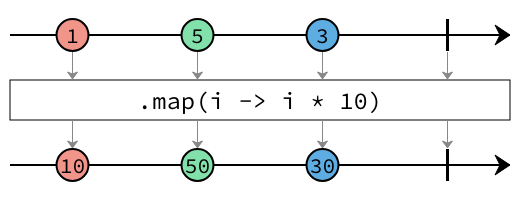
- Specified by:
mapin interfaceTransformingOperators<T>- Type Parameters:
R- The type of elements that themapperfunction emits.- Parameters:
mapper- The function to use to map the elements.- Returns:
- A new stream builder that emits the mapped elements.
-
flatMap
Map the elements to publishers, and flatten so that the elements emitted by publishers produced by themapperfunction are emitted from this stream.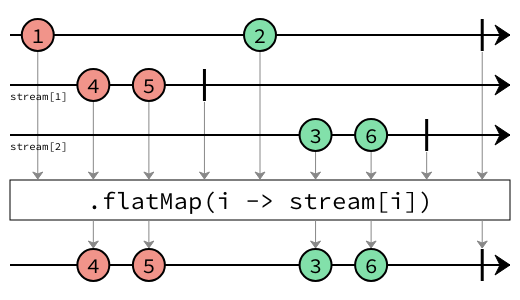
This method operates on one publisher at a time. The result is a concatenation of elements emitted from all the publishers produced by the mapper function.
Unlike
TransformingOperators.flatMapRsPublisher(Function)}, the mapper function returns aorg.eclipse.microprofile.reactive.streamstype instead of anorg.reactivestreamstype.- Specified by:
flatMapin interfaceTransformingOperators<T>- Type Parameters:
S- The type of the elements emitted from the new stream.- Parameters:
mapper- The mapper function.- Returns:
- A new stream builder.
-
flatMapRsPublisher
<S> PublisherBuilder<S> flatMapRsPublisher(Function<? super T, ? extends org.reactivestreams.Publisher<? extends S>> mapper) Map the elements to publishers, and flatten so that the elements emitted by publishers produced by themapperfunction are emitted from this stream.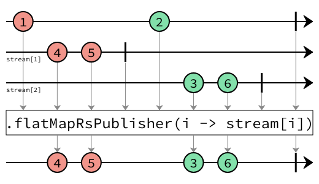
This method operates on one publisher at a time. The result is a concatenation of elements emitted from all the publishers produced by the mapper function.
Unlike
TransformingOperators.flatMap(Function), the mapper function returns aorg.eclipse.microprofile.reactive.streamsbuilder instead of anorg.reactivestreamstype.- Specified by:
flatMapRsPublisherin interfaceTransformingOperators<T>- Type Parameters:
S- The type of the elements emitted from the new stream.- Parameters:
mapper- The mapper function.- Returns:
- A new stream builder.
-
flatMapCompletionStage
<S> PublisherBuilder<S> flatMapCompletionStage(Function<? super T, ? extends CompletionStage<? extends S>> mapper) Map the elements toCompletionStage, and flatten so that the elements the values redeemed by eachCompletionStageare emitted from this stream.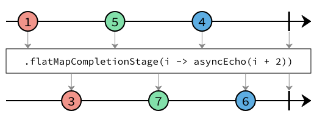
This method only works with one element at a time. When an element is received, the
mapperfunction is executed, and the next element is not consumed or passed to themapperfunction until the previousCompletionStageis redeemed. Hence this method also guarantees that ordering of the stream is maintained.- Specified by:
flatMapCompletionStagein interfaceTransformingOperators<T>- Type Parameters:
S- The type of the elements emitted from the new stream.- Parameters:
mapper- The mapper function.- Returns:
- A new stream builder.
-
flatMapIterable
Map the elements toIterable's, and flatten so that the elements contained in each iterable are emitted by this stream.
This method operates on one iterable at a time. The result is a concatenation of elements contain in all the iterables returned by the
mapperfunction.- Specified by:
flatMapIterablein interfaceTransformingOperators<T>- Type Parameters:
S- The type of the elements emitted from the new stream.- Parameters:
mapper- The mapper function.- Returns:
- A new stream builder.
-
filter
Filter elements emitted by this publisher using the givenPredicate.Any elements that return
truewhen passed to thePredicatewill be emitted, all other elements will be dropped.
- Specified by:
filterin interfaceFilteringOperators<T>- Parameters:
predicate- The predicate to apply to each element.- Returns:
- A new stream builder.
-
distinct
PublisherBuilder<T> distinct()Creates a stream consisting of the distinct elements (according toObject.equals(Object)) of this stream.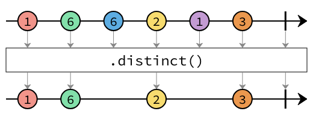
- Specified by:
distinctin interfaceFilteringOperators<T>- Returns:
- A new stream builder emitting the distinct elements from this stream.
-
limit
Truncate this stream, ensuring the stream is no longer thanmaxSizeelements in length.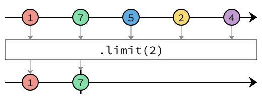
If
maxSizeis reached, the stream will be completed, and upstream will be cancelled. Completion of the stream will occur immediately when the element that satisfies themaxSizeis received.- Specified by:
limitin interfaceFilteringOperators<T>- Parameters:
maxSize- The maximum size of the returned stream.- Returns:
- A new stream builder.
-
skip
Discard the firstnof this stream. If this stream contains fewer thannelements, this stream will effectively be an empty stream.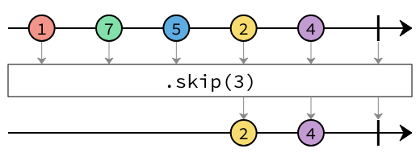
- Specified by:
skipin interfaceFilteringOperators<T>- Parameters:
n- The number of elements to discard.- Returns:
- A new stream builder.
-
takeWhile
Take the longest prefix of elements from this stream that satisfy the givenpredicate.
When the
predicatereturns false, the stream will be completed, and upstream will be cancelled.- Specified by:
takeWhilein interfaceFilteringOperators<T>- Parameters:
predicate- The predicate.- Returns:
- A new stream builder.
-
dropWhile
Drop the longest prefix of elements from this stream that satisfy the givenpredicate.
As long as the
predicatereturns true, no elements will be emitted from this stream. Once the first element is encountered for which thepredicatereturns false, all subsequent elements will be emitted, and thepredicatewill no longer be invoked.- Specified by:
dropWhilein interfaceFilteringOperators<T>- Parameters:
predicate- The predicate.- Returns:
- A new stream builder.
-
peek
Returns a stream containing all the elements from this stream, additionally performing the provided action on each element.
- Specified by:
peekin interfacePeekingOperators<T>- Parameters:
consumer- The function called for every element.- Returns:
- A new stream builder that consumes elements of type
Tand emits the same elements. In between, the given function is called for each element.
-
onError
Returns a stream containing all the elements from this stream, additionally performing the provided action if this stream conveys an error. The given consumer is called with the failure.
- Specified by:
onErrorin interfacePeekingOperators<T>- Parameters:
errorHandler- The function called with the failure.- Returns:
- A new stream builder that consumes elements of type
Tand emits the same elements. If the stream conveys a failure, the given error handler is called.
-
onTerminate
Returns a stream containing all the elements from this stream, additionally performing the provided action when this stream completes or failed. The given action does not know if the stream failed or completed. If you need to distinguish usePeekingOperators.onError(Consumer)andPeekingOperators.onComplete(Runnable). In addition, the action is called if the stream is cancelled downstream.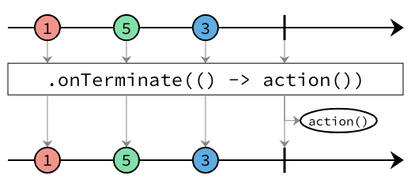
- Specified by:
onTerminatein interfacePeekingOperators<T>- Parameters:
action- The function called when the stream completes or failed.- Returns:
- A new stream builder that consumes elements of type
Tand emits the same elements. The given action is called when the stream completes or fails.
-
onComplete
Returns a stream containing all the elements from this stream, additionally performing the provided action when this stream completes.
- Specified by:
onCompletein interfacePeekingOperators<T>- Parameters:
action- The function called when the stream completes.- Returns:
- A new stream builder that consumes elements of type
Tand emits the same elements. The given action is called when the stream completes.
-
forEach
Performs an action for each element on this stream.
The returned
CompletionStagewill be redeemed when the stream completes, either successfully if the stream completes normally, or with an error if the stream completes with an error or if the action throws an exception.- Specified by:
forEachin interfaceConsumingOperators<T>- Parameters:
action- The action.- Returns:
- A new
CompletionRunnerthat can be used to run the stream.
-
ignore
CompletionRunner<Void> ignore()Ignores each element of this stream.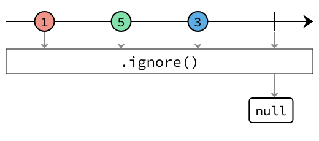
The returned
CompletionStagewill be redeemed when the stream completes, either successfully if the stream completes normally, or with an error if the stream completes with an error or if the action throws an exception.- Specified by:
ignorein interfaceConsumingOperators<T>- Returns:
- A new
CompletionRunnerthat can be used to run the stream.
-
cancel
CompletionRunner<Void> cancel()Cancels the stream as soon as it is run.The returned
CompletionStagewill be immediately redeemed as soon as the stream is run.- Specified by:
cancelin interfaceConsumingOperators<T>- Returns:
- A new
CompletionRunnerthat can be used to run the stream.
-
reduce
Perform a reduction on the elements of this stream, using the provided identity value and the accumulation function.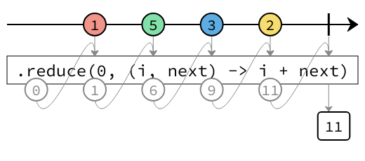
The result of the reduction is returned in the
CompletionStage.- Specified by:
reducein interfaceConsumingOperators<T>- Parameters:
identity- The identity value.accumulator- The accumulator function.- Returns:
- A new
CompletionRunnerthat can be used to run the stream.
-
reduce
Perform a reduction on the elements of this stream, using the provided accumulation function.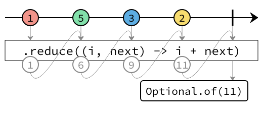
The result of the reduction is returned as an
Optional<T>in theCompletionStage. If there are no elements in this stream, empty will be returned.- Specified by:
reducein interfaceConsumingOperators<T>- Parameters:
accumulator- The accumulator function.- Returns:
- A new
CompletionRunnerthat can be used to run the stream.
-
findFirst
CompletionRunner<Optional<T>> findFirst()Find the first element emitted by thePublisher, and return it in aCompletionStage.
If the stream is completed before a single element is emitted, then
Optional.empty()will be emitted.- Specified by:
findFirstin interfaceConsumingOperators<T>- Returns:
- A new
CompletionRunnerthat can be used to run the stream.
-
collect
Collect the elements emitted by this stream using the givenCollector.Since Reactive Streams are intrinsically sequential, only the accumulator of the collector will be used, the combiner will not be used.
- Specified by:
collectin interfaceConsumingOperators<T>- Type Parameters:
R- The result of the collector.A- The accumulator type.- Parameters:
collector- The collector to collect the elements.- Returns:
- A new
CompletionRunnerthat can be used to run the stream, R is the result type of the collector's reduction operation.
-
collect
Collect the elements emitted by this stream using aCollectorbuilt from the givensupplierandaccumulator.
Since Reactive Streams are intrinsically sequential, the combiner will not be used. This is why this method does not accept a combiner method.
- Specified by:
collectin interfaceConsumingOperators<T>- Type Parameters:
R- The result of the collector.- Parameters:
supplier- a function that creates a new result container. It creates objects of type<A>.accumulator- an associative, non-interfering, stateless function for incorporating an additional element into a result- Returns:
- A new
CompletionRunnerthat can be used to run the stream which emits the collected result.
-
toList
CompletionRunner<List<T>> toList()- Specified by:
toListin interfaceConsumingOperators<T>- Returns:
- A new
CompletionRunnerthat can be used to run the stream that emits the list.
-
onErrorResume
Returns a stream containing all the elements from this stream. Additionally, in the case of failure, it invokes the given function and emits the result as final event of the stream.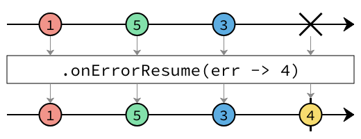
By default, when a stream encounters an error that prevents it from emitting the expected item to its subscriber, the stream invokes its subscriber's
onErrormethod, and then terminates without invoking any more of its subscriber's methods. This operator changes this behavior. If the current stream encounters an error, instead of invoking its subscriber'sonErrormethod, it will instead emit the return value of the passed function. This operator prevents errors from propagating or to supply fallback data should errors be encountered.- Specified by:
onErrorResumein interfaceErrorHandlingOperators<T>- Parameters:
errorHandler- the function returning the value that needs to be emitting instead of the error. The function must not returnnull.- Returns:
- The new stream builder.
-
onErrorResumeWith
PublisherBuilder<T> onErrorResumeWith(Function<Throwable, ? extends PublisherBuilder<? extends T>> errorHandler) Returns a stream containing all the elements from this stream. Additionally, in the case of failure, it invokes the given function and emits the elements from the returnedPublisherBuilderinstead.
By default, when a stream encounters an error that prevents it from emitting the expected item to its subscriber, the stream invokes its subscriber's
onErrormethod, and then terminates without invoking any more of its subscriber's methods. This operator changes this behavior. If the current stream encounters an error, instead of invoking its subscriber'sonErrormethod, it will instead relinquish control to thePublisherBuilderreturned from the given function, which invokes the subscriber'sonNextmethod if it is able to do so. The subscriber's originalSubscriptionis used to control the flow of elements both before and after any error occurring. In such a case, because no publisher necessarily invokesonErroron the stream's subscriber, it may never know that an error happened.- Specified by:
onErrorResumeWithin interfaceErrorHandlingOperators<T>- Parameters:
errorHandler- the function returning the stream that needs to be emitting instead of the error. The function must not returnnull.- Returns:
- The new stream builder.
-
onErrorResumeWithRsPublisher
PublisherBuilder<T> onErrorResumeWithRsPublisher(Function<Throwable, ? extends org.reactivestreams.Publisher<? extends T>> errorHandler) Returns a stream containing all the elements from this stream. Additionally, in the case of failure, it invokes the given function and emits the elements from the returnedPublisherinstead.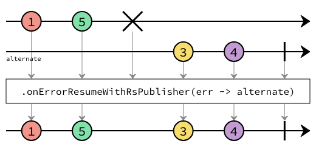
By default, when a stream encounters an error that prevents it from emitting the expected item to its subscriber, the stream invokes its subscriber's
onErrormethod, and then terminates without invoking any more of its subscriber's methods. This operator changes this behavior. If the current stream encounters an error, instead of invoking its subscriber'sonErrormethod, the subscriber will be fed from thePublisherreturned from the given function, and the subscriber'sonNextmethod is called as the returned Publisher publishes. The subscriber's originalSubscriptionis used to control the flow of both the original and the onError Publishers' elements. In such a case, because no publisher necessarily invokesonError, the subscriber may never know that an error happened.- Specified by:
onErrorResumeWithRsPublisherin interfaceErrorHandlingOperators<T>- Parameters:
errorHandler- the function returning the stream that need to be emitting instead of the error. The function must not returnnull.- Returns:
- The new stream builder.
-
to
Connect the outlet of thePublisherbuilt by this builder to the givenSubscriber. The Reactive Streams specification states that a subscriber should cancel any new stream subscription it receives if it already has an active subscription. The returned result of this method is a stream that creates a subscription for the subscriber passed in, so the resulting stream should only be run once. For the same reason, the subscriber passed in should not have any active subscriptions and should not be used in more than one call to this method.- Specified by:
toin interfaceConnectingOperators<T>- Parameters:
subscriber- The subscriber to connect.- Returns:
- A new
CompletionRunnerthat can be used to run the composed stream.
-
to
Connect the outlet of this stream to the givenSubscriberBuildergraph. The Reactive Streams specification states that a subscriber should cancel any new stream subscription it receives if it already has an active subscription. For this reason, a subscriber builder, particularly any that represents a graph that includes a user suppliedSubscriberorProcessorstage, should not be used in the creation of more than one stream instance.- Specified by:
toin interfaceConnectingOperators<T>- Parameters:
subscriber- The subscriber builder to connect.- Returns:
- A new
CompletionRunnerthat can be used to run the composed stream.
-
via
Connect the outlet of thePublisherbuilt by this builder to the givenProcessorBuilder. The Reactive Streams specification states that a subscribing processor should cancel any new stream subscription it receives if it already has an active subscription. For this reason, a processor builder, particularly any that represents a graph that includes a user suppliedProcessorstage, should not be used in the creation of more than one stream instance.- Specified by:
viain interfaceConnectingOperators<T>- Parameters:
processor- The processor builder to connect.- Returns:
- A stream builder that represents the passed in processor's outlet.
-
via
Connect the outlet of this stream to the givenProcessor. The Reactive Streams specification states that a subscribing processor should cancel any new stream subscription it receives if it already has an active subscription. The returned result of this method is a stream that creates a subscription for the processor passed in, so the resulting stream should only be run once. For the same reason, the processor passed in should not have any active subscriptions and should not be used in more than one call to this method.- Specified by:
viain interfaceConnectingOperators<T>- Parameters:
processor- The processor builder to connect.- Returns:
- A stream builder that represents the passed in processor builder's outlet.
-
buildRs
org.reactivestreams.Publisher<T> buildRs()Build this stream, using the firstReactiveStreamsEnginefound by theServiceLoader.- Returns:
- A
Publisherthat will run this stream.
-
buildRs
Build this stream, using the suppliedReactiveStreamsEngine.- Parameters:
engine- The engine to run the stream with.- Returns:
- A
Publisherthat will run this stream.
-